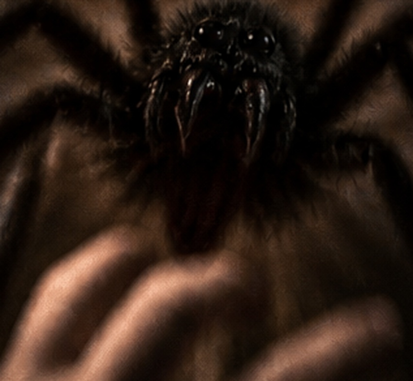

🔦
100%
BEEIL DICH
00:30
◉

🖐️
DIE VORSTELLUNG BEGINNT
Intro überspringen
DU MUSST ZUHÖREN
♟
DAISY BELL
Die Walze dreht sich …
🩸 Vorzeitig verlassen (30 Blut)
Animation überspringen
Ob versteckt oder nicht … ICH KOMME!
Weitergehen
Du hebst die staubige Taschenlampe auf …
Bist du dir sicher, dass sie nicht mehr auf dir sitzt?
Der letzte Brief
Brief vollständig anzeigen
Brief anheben
📖
BIBLIOTHEK · V25 · MITLESETEXT
00:00
Vorlesung abbrechen